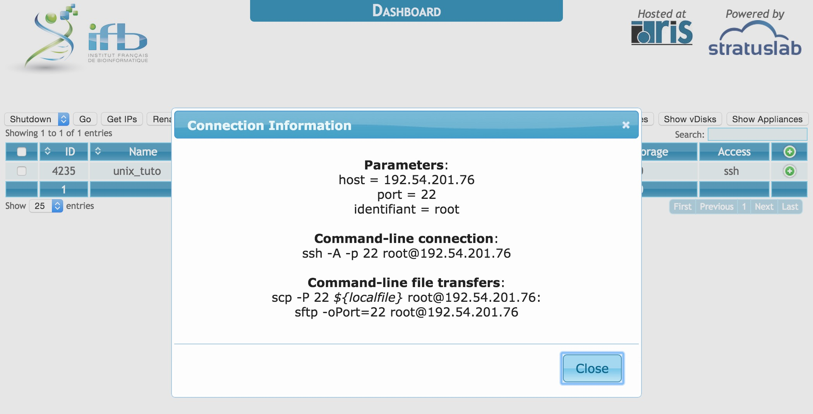
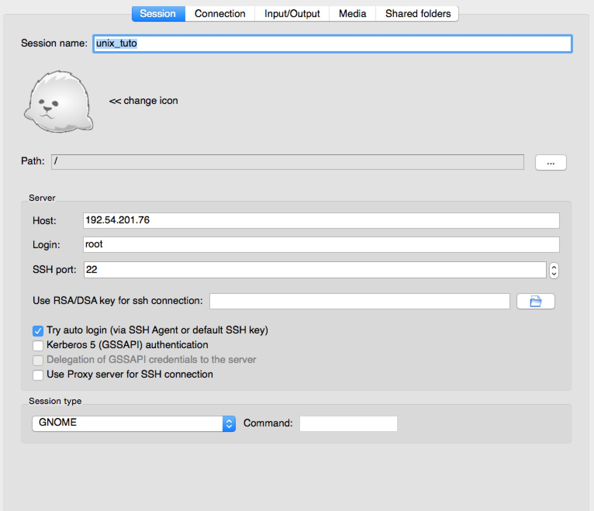

Accéder au bureau distant¶
Créer une instance dans le cloud IFB¶
Pour accéder au bureau virtuel nous devons tout d’abord créer une instance de machine à l’IFB.
Rendez vous sur la page de login.
Complétez le formulaire avec votre login et votre mot de passe.
Cliquez sur new instance.
- Positionnez Choose the Appliance > Appliance sur EBA15 Cours-Unix 0.1.
- Positionnez Configure you virtual machine > Name sur unix_tuto.
- Positionnez Configure you virtual machine > Type sur c2.large.
- Cliquez run. La nouvelle instance devrait apparaître dans le tableau (re-actualisez éventuellement votre navigateur internet).
- Regardez la colonne access dans le tableau. Votre instance devrait rapidement être accessible par ssh.
- Cliquez sur ssh dans la colonne access.
- Dans Parameters > host copiez l’adresse IP.

{kind=link}
Interface du site web de l’IFB.
Se connecter au bureau distant avec x2go¶
- Démarrez x2goclient.
- Dans le menu de x2goclient sélectionnez Session > New session.
- Indiquez Unix_tuto comme nom de session.
- Collez l’adresse IP dans le champs Host.
- Indiquez root pour le champs login.
- Sélectionnez Try auto login (via SSH Agent or default SSH key).
- Sélectionnez MATE pour Session type.
- Sous windows indiquez le chemin vers la clef privée au format open ssh.
- Double-cliquez sur la session nouvellement créée pour la démarrer.

{kind=link}
Interface du logiciel X2GO (Mac OSX).